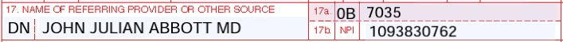

library(provider)
library(tidyverse)
library(knitr)Claim Forms
Claim forms are used to report the procedures performed and the reason the procedures were performed to the insurance carrier to obtain payment for those services. There are two claim forms used; the CMS-1500 (sometimes referred to as the HCFA) and the UB-04. The CMS-1500 is used to report the professional services performed by providers and Ambulatory Surgical Centers (ASCs). The UB-04 is used to report facility (hospital) services.
CMS-1500
The CMS-1500 claim form is used to submit claims for physicians, non-physician practitioners (NPP), and ASC services to all payers. For this example, I’ll load the provider package and use several of it’s functions to fill out the Items pertaining to the physician.
I’ve chosen a provider at random and I’ll go ahead and retrieve his NPPES information:
nppes <- nppes_npi(npi = 1730455775)Item 17
Enter the name of the referring or ordering physician if applicable. The name should be entered as First Name, Middle Initial, Last Name, followed by the provider’s credentials. Do not use commas or periods. Enter the applicable qualifier to the left of the vertical dotted line. In addition, the supervising physician can also be reported in this field. When multiple providers are involved, enter one provider using the following priority order:
- Referring Provider (Qualifier
DN) - Ordering Provider (Qualifier
DK) - Supervising Provider (Qualifier
DQ)
nppes |>
select(npi, first_name:credential) |>
distinct() |>
kable()| npi | first_name | middle_name | last_name | credential |
|---|---|---|---|---|
| 1730455775 | JONATHAN | LAWRENCE | ABBOTT | MD |
Medicare Requirements
All physicians who order services or refer Medicare beneficiaries must report this data. When more than one provider is involved, use a separate CMS-1500 claim form for each referring, ordering, or supervising physician.
Item 17a
Enter the Other ID number of the referring, ordering, or supervising provider. Enter the qualifier to indicate what number is being reported:
0BState License Number1GProvider UPIN Number (no longer used, replaced by the NPI)G2Provider Commercial NumberLULocation Number (used for the supervising provider only)
Item 17b
Enter the National Provider Identifier (NPI) of the referring/ordering/supervising physician or non-physician practitioner listed in item 17. NPIs are required for all providers and facilities.

Item 24I
Enter the qualifier identifying if the number is a non-NPI. The qualifier identifies what type of number is used in 24J.
Taxonomy Qualifier = ZZ
Item 24J
Enter the non-NPI number in the shaded area of the field and enter the rendering provider’s NPI number in the unshaded portion.
Primary Taxonomy.
nppes |>
select(contains("tx"), -tx_group) |>
distinct() |>
kable()| tx_code | tx_desc | tx_state | tx_license | tx_primary |
|---|---|---|---|---|
| 207V00000X | Obstetrics & Gynecology | NE | 27615 | FALSE |
| 207V00000X | Obstetrics & Gynecology | KY | 52531 | TRUE |
Item 25
Enter the Federal Tax ID number (Employer Identification Number or Social Security Number) of the provider of service or supplier and check the appropriate check box. A common reason for claims rejection is the Tax ID not being associated with the billing provider’s NPI.
Item 27
Check the appropriate block to indicate whether the provider of service or supplier accepts assignment. Accepting assignment means the provider agrees to the allowed amount (negotiated rate) for the charge. When a provider accepts assignment, the difference between the charged amount and the allowed amount will be a contractual write-off for the provider.
Medicare requires the following types of providers to accept assignment:
- Clinical diagnostic laboratory services
- Physician services to individuals dually entitled to Medicare and Medicaid
- Participating physician/supplier services
- Services of physician assistants, nurse practitioners, clinical nurse specialists, nurse midwives, certified registered nurse anesthetists, clinical psychologists, and clinical social workers
- Ambulatory surgical center services for covered ASC procedures
- Home dialysis supplies and equipment paid under Method II
- Ambulance services
- Drugs and biologicals
- Simplified Billing Roster for influenza virus vaccine and pneumococcal vaccine
Item 32
Enter the address where the services were provided if different from the billing provider’s address.
Item 32a
If required by the payer, enter the facility’s NPI.
Item 32b
Enter the qualifier identifying the non-NPI number followed by the ID number.
Item 33
Enter the provider of service/supplier’s billing name, address, 9-digit ZIP code (without the hyphen), and telephone number. This is a required item. The 5010A1 electronic version requires the billing provider address to be a physical address. This cannot be a P.O. box number. A P.O. box number in this field will cause the claim to be rejected.
Item 33a
Enter the NPI of the billing provider or group.
Item 33b
Enter the qualifier identifying the non-NPI number followed by the ID number. Qualifiers for use in the 5010A1 version are:
0BState License NumberG2Provider Commercial NumberPXCProvider Taxonomy for electronic claims (ZZis the Provider Taxonomy qualifier for paper claims)
nppes |>
select(purpose:state) |>
distinct() |>
kable()| purpose | street | city | state |
|---|---|---|---|
| PRACTICE | 650 JOEL DR | FORT CAMPBELL | KY |
| MAILING | 102 W 18TH ST | HOPKINSVILLE | KY |
| LOCATION | 1717 HIGH ST STE 4B | HOPKINSVILLE | KY |
enroll <- provider_enrollment(npi = 1730455775)
enroll |>
select(pac_id:specialty_desc) |>
glimpse()Rows: 1
Columns: 4
$ pac_id <chr> "8123242633"
$ enroll_id <chr> "I20190826002517"
$ specialty_code <chr> "14-16"
$ specialty_desc <chr> "PRACTITIONER - OBSTETRICS/GYNECOLOGY"reval <- revalidation_reassign(npi = 1730455775)
reval |> select(pac_id_group:state_group)# A tibble: 3 × 4
pac_id_group enroll_id_group business_name state_group
<chr> <chr> <chr> <chr>
1 5597867184 O20150219000942 Baptist Health Medical Group Inc KY
2 7012187925 O20110901000656 Fairview Physicians Network Llc KY
3 4183607252 O20040609001506 Jennie Stuart Medical Center Inc KY drs <- doctors_and_clinicians(npi = 1730455775)
drs |>
select(org_name:group_assn) |>
glimpse()Rows: 1
Columns: 10
$ org_name <chr> "JENNIE STUART MEDICAL CENTER INC"
$ org_pac_id <chr> "4183607252"
$ org_members <int> 58
$ address <chr> "1621 NASHVILLE ST SUITE 102"
$ city <chr> "RUSSELLVILLE"
$ state <chr> "KY"
$ zipcode <chr> "422768871"
$ phone <chr> "2708879058"
$ ind_assn <chr> "Y"
$ group_assn <chr> "Y"aff <- facility_affiliations(npi = 1730455775)
aff |> select(facility_type,
facility_ccn)# A tibble: 1 × 2
facility_type facility_ccn
<chr> <chr>
1 Hospital 180051 hosp <- hospital_enrollment(facility_ccn = 180051)
hosp |> select(org_name,
org_structure,
address,
city,
state,
location_type,
multiple_npis) |>
glimpse()Rows: 1
Columns: 7
$ org_name <chr> "JENNIE STUART MEDICAL CENTER INC"
$ org_structure <chr> "CORPORATION"
$ address <chr> "320W 18TH ST"
$ city <chr> "HOPKINSVILLE"
$ state <chr> "KY"
$ location_type <chr> "OTHER HOSPITAL PRACTICE LOCATION"
$ multiple_npis <lgl> FALSE